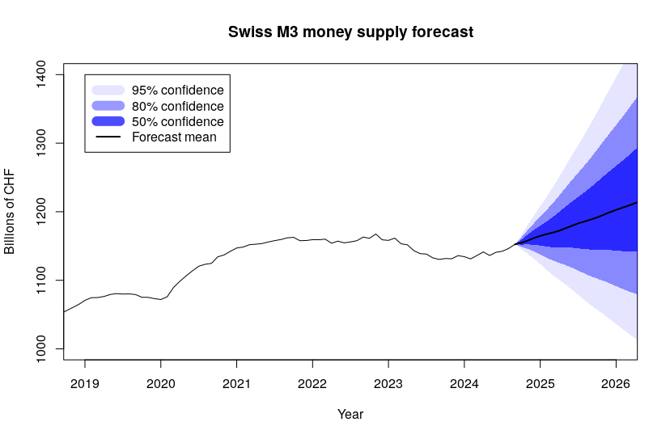
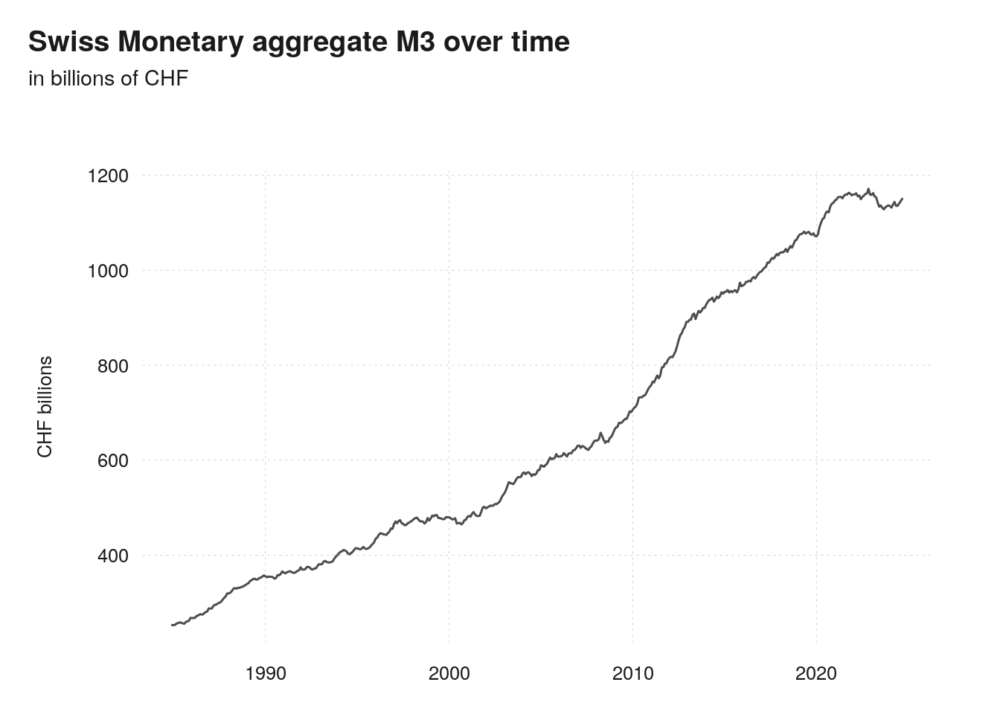
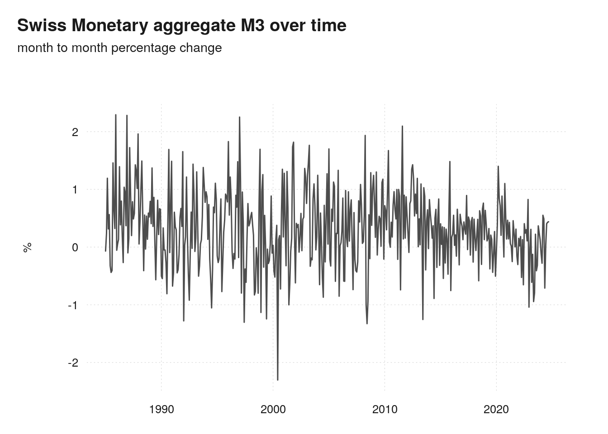
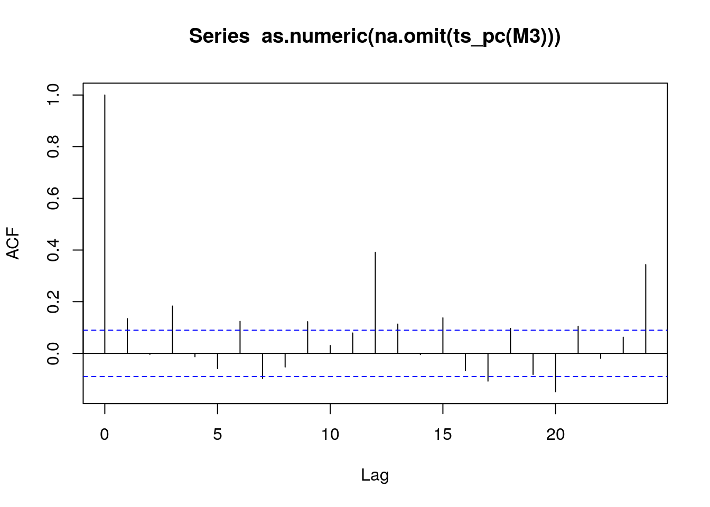
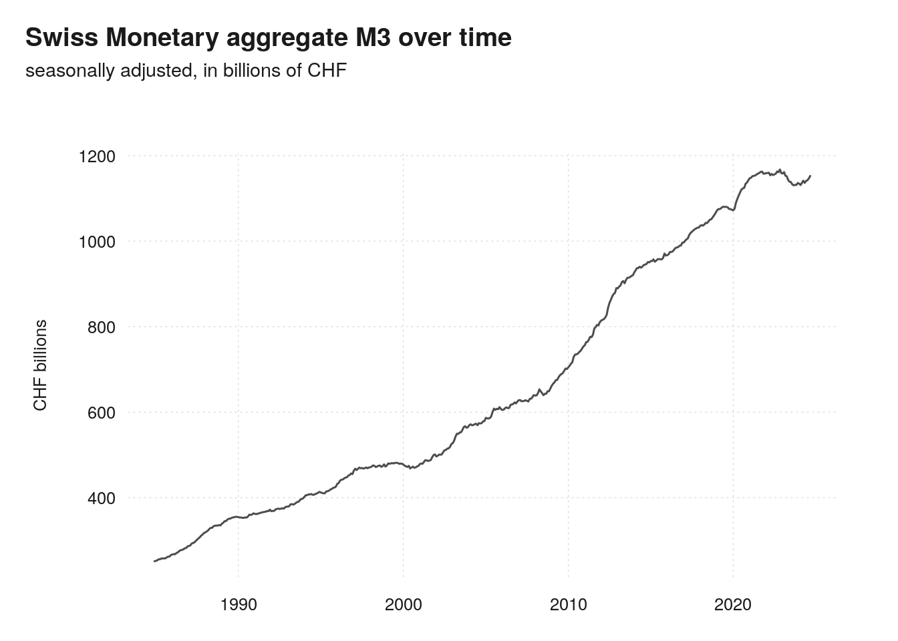
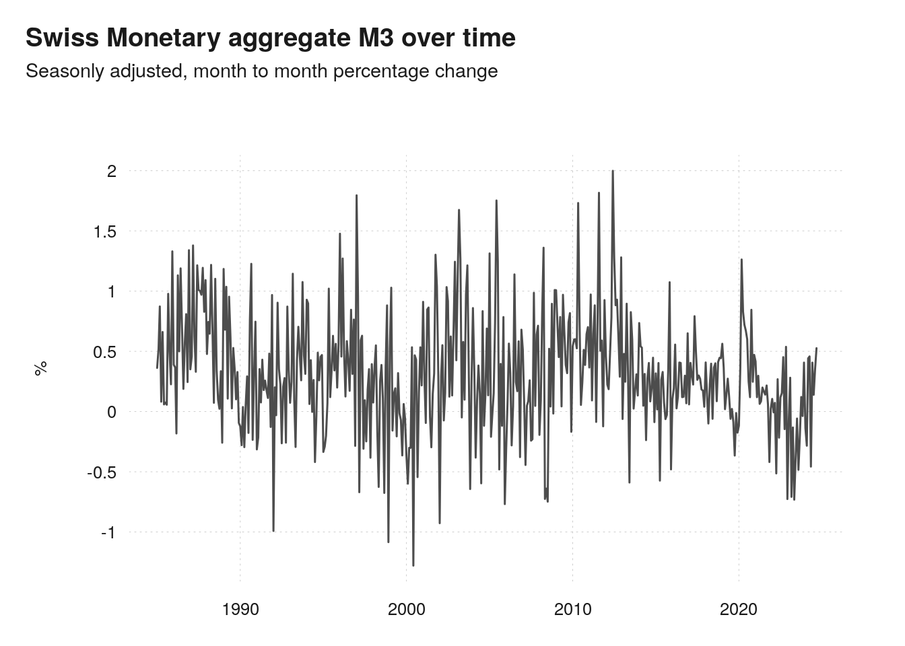
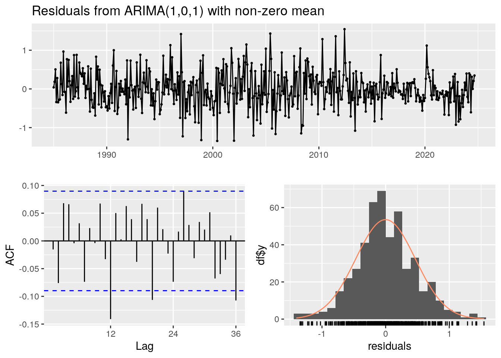
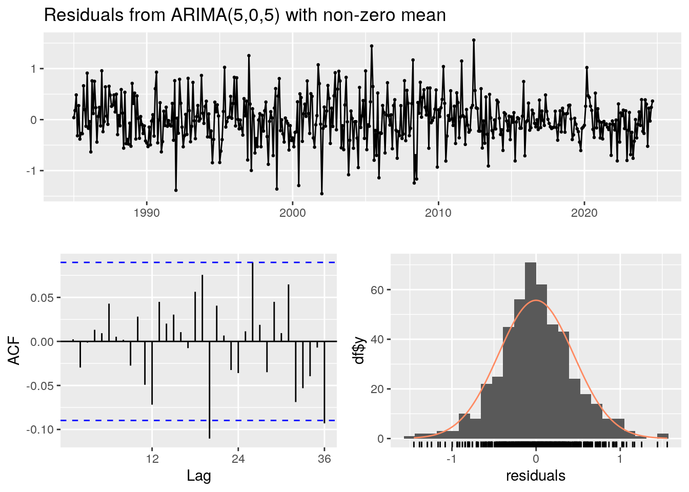
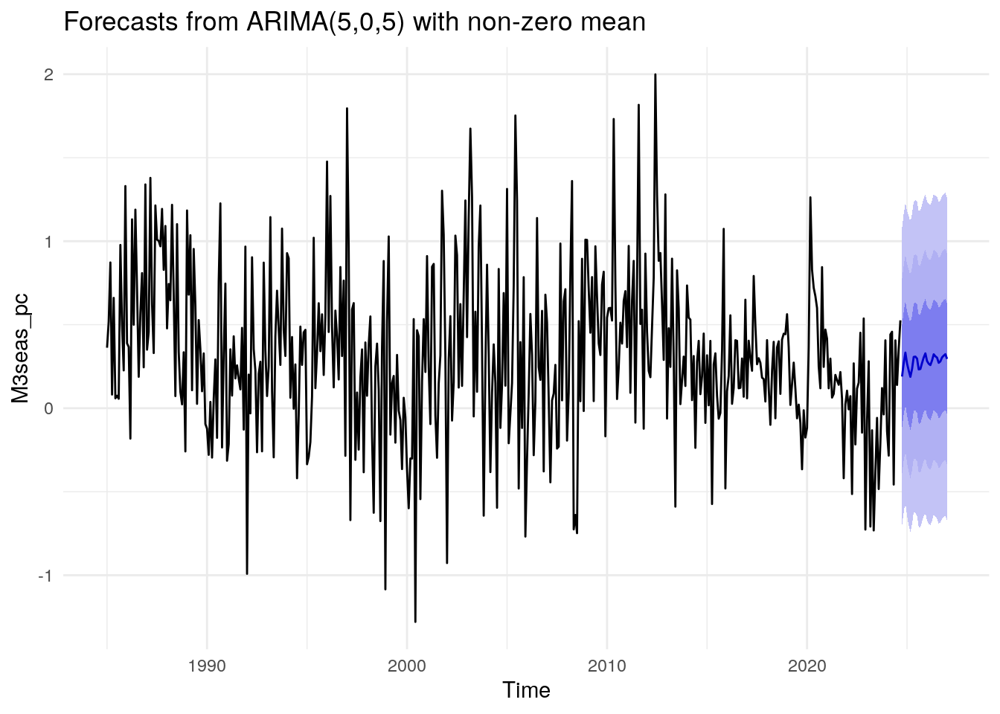
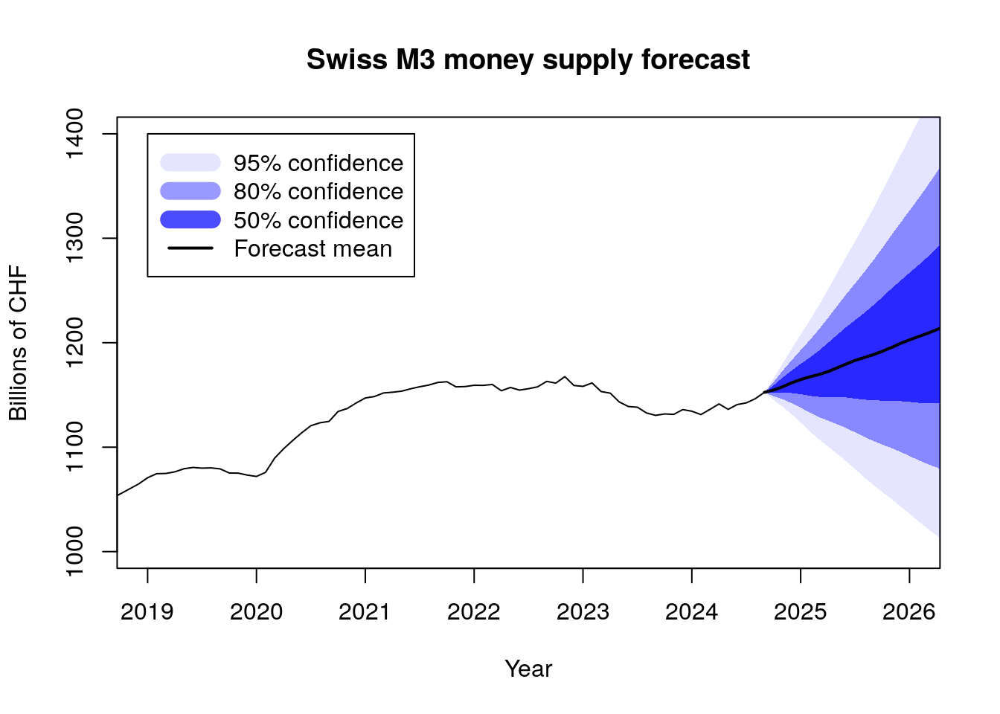

library(readxl)
library(xts)
library(dplyr)
library(tsbox)
library(CADFtest)
library(forecast)
library(ggplot2)
library(seasonal)
library(lmtest)2. Time Series forecasting
Projekt wykonany w języku R w ramach zajęć Applied Macroeconometrics.

Time series forecasting
Podczas mojej wymiany studenckiej w Neuchâtel miałem przyjemność uczestniczyć w zajęciach z makroekonometrii stosowanej, prowadzonych przez prof. Daniela Kaufmana. Na zajęciach uczyliśmy się prognozowania makroekonomicznych szeregów czasowych, a jednym z elementów zaliczenia było przygotowanie prognozy wskaźnika wyznaczonego przez profesora. Moim zadaniem było opracowanie prognozy wartości wskaźnika podaży pieniądza M3 dla Szwajcarii.
Oto mój kod, który zastosowałem do wykonania prognozy.
nameMin <- function(Matx){
# This is a useful function that returns the column and row names of a matrix
# for the minimum value of the matrix
ind <- which(Matx == min(Matx), arr.ind = TRUE)
cname <- colnames(Matx)[[ind[2]]]
rname <- rownames(Matx)[[ind[1]]]
return(c(rname, cname))
}Historyczne wartości wskaźnika M3 pobrałem ze strony Szwajcarskiego Banku Centralnego.
data <- read_excel("snb-chart-data-snbmonagglech-en-all-20241021_0900.xlsx",
skip = 15) # First 15 lines of the file are the information about the data
# Let's inspect the data
data %>% head(5)# A tibble: 5 × 9
...1 `Currency in circulation` `Sight deposits` Deposits in transaction a…¹
<chr> <dbl> <dbl> <dbl>
1 1984-12 23.7 44.4 27.3
2 1985-01 22.2 41.6 28.0
3 1985-02 22.2 38.6 28.4
4 1985-03 22.3 39.6 28.3
5 1985-04 22.0 40.0 28.4
# ℹ abbreviated name: ¹`Deposits in transaction accounts`
# ℹ 5 more variables: `Savings deposits` <dbl>, `Time deposits` <dbl>,
# M1 <dbl>, M2 <dbl>, M3 <dbl>Starcjonarność szeregu
Zobaczymy jak dane prezentują się na wykresie.
# Modifying the date vector to convert it later to a POSIX format
M3 <- xts(x = data$M3,
order.by= as.Date(sapply(data[,1], paste0, "-01"))
)
ts_plot(M3,
title = "Swiss Monetary aggregate M3 over time",
subtitle = "in billions of CHF",
ylab = "CHF billions")
Wizualnie można zauważyć, że poziom M3 nie jest stacjonarny i wykazuje trend rosnący.
Sprawdźmy to również matematycznie.
Do tego użyję testu Augmented Dickey-Fuller (ADF), który służy do sprawdzania, czy szereg czasowy jest stacjonarny.
unitRootTest <- CADFtest(M3, type = "trend", max.lag.y=10)
summary(unitRootTest)Augmented DF test
ADF test
t-test statistic: -1.4983573
p-value: 0.8291424
Max lag of the diff. dependent variable: 10.0000000
Call:
dynlm(formula = formula(model), start = obs.1, end = obs.T)
Residuals:
Min 1Q Median 3Q Max
-14.6944 -2.3640 0.2272 2.3451 15.3185
Coefficients:
Estimate Std. Error t value Pr(>|t|)
(Intercept) 1.522721 0.614911 2.476 0.013638 *
trnd 0.010613 0.006340 1.674 0.094817 .
L(y, 1) -0.004497 0.003001 -1.498 0.829142
L(d(y), 1) 0.109869 0.046814 2.347 0.019357 *
L(d(y), 2) -0.009863 0.046899 -0.210 0.833526
L(d(y), 3) 0.215642 0.046840 4.604 5.39e-06 ***
L(d(y), 4) 0.042155 0.047272 0.892 0.373000
L(d(y), 5) -0.049811 0.047393 -1.051 0.293816
L(d(y), 6) 0.097265 0.047411 2.052 0.040790 *
L(d(y), 7) -0.174298 0.047666 -3.657 0.000285 ***
L(d(y), 8) 0.041753 0.047302 0.883 0.377876
L(d(y), 9) 0.104568 0.047378 2.207 0.027807 *
L(d(y), 10) 0.030430 0.047362 0.642 0.520873
---
Signif. codes: 0 '***' 0.001 '**' 0.01 '*' 0.05 '.' 0.1 ' ' 1
Residual standard error: 3.908 on 454 degrees of freedom
Multiple R-squared: 0.126, Adjusted R-squared: 0.1029
F-statistic: 6.088 on 10 and 454 DF, p-value: 1.016e-08Hipoteza zerowa testu Dickey-Fuller mówi o tym że szereg czasowy jest niestacjonarny. W teście p-value wynosi około 0,8 a to oznacza że nie ma podstaw do odrzucenia hipotezy zerowej.
Aby usunąć trend, i przekształcić szereg w stacjonarny, muszę zróżnicować dane. Robię to obliczając procentowe zmiany szeregu czasowego za pomocą funkcji ts_pc().
ts_plot(ts_pc(M3),
title = "Swiss Monetary aggregate M3 over time",
subtitle = "month to month percentage change",
ylab = "%")
Wizualnie nie widzę większego trendu ale sprawdźmy to za pomocą testu ADF.
unitRootTest <- CADFtest(ts_pc(M3), type = "drift", max.lag.y=10)
summary(unitRootTest)Augmented DF test
ADF test
t-test statistic: -5.1349687627
p-value: 0.0000140977
Max lag of the diff. dependent variable: 10.0000000000
Call:
dynlm(formula = formula(model), start = obs.1, end = obs.T)
Residuals:
Min 1Q Median 3Q Max
-2.31049 -0.40007 0.00915 0.33484 1.86934
Coefficients:
Estimate Std. Error t value Pr(>|t|)
(Intercept) 0.19675 0.04853 4.054 5.92e-05 ***
L(y, 1) -0.61773 0.12030 -5.135 1.41e-05 ***
L(d(y), 1) -0.22043 0.11685 -1.886 0.05987 .
L(d(y), 2) -0.25948 0.11201 -2.317 0.02097 *
L(d(y), 3) -0.08458 0.10568 -0.800 0.42393
L(d(y), 4) -0.10319 0.09877 -1.045 0.29669
L(d(y), 5) -0.17109 0.09360 -1.828 0.06823 .
L(d(y), 6) -0.05818 0.08609 -0.676 0.49950
L(d(y), 7) -0.19022 0.07908 -2.405 0.01655 *
L(d(y), 8) -0.20980 0.07231 -2.902 0.00389 **
L(d(y), 9) -0.12590 0.06040 -2.084 0.03768 *
L(d(y), 10) -0.10073 0.04639 -2.172 0.03040 *
---
Signif. codes: 0 '***' 0.001 '**' 0.01 '*' 0.05 '.' 0.1 ' ' 1
Residual standard error: 0.6302 on 454 degrees of freedom
(1 observation deleted due to missingness)
Multiple R-squared: 0.4839, Adjusted R-squared: 0.4714
F-statistic: 4.536 on 10 and 454 DF, p-value: 3.868e-06P-value jest bardzo małe, szereg jest stacjonarny wokół stałej średniej. To na nim mogę teraz wykonać analizę. Przy interpretacji wyników trzeba pamiętać o powrotnej transformacji szeregu do oryginalnej formy.
Teraz sprawdźmy czy występuje sezonowość. Jeśli tak to trzeba będzie ją usunąć.
acf(as.numeric(na.omit(ts_pc(M3))), lag.max = 24, plot = T)
Tak, sezonowość występuje. Widzimy to przez znaczące autokorelację na dwunastym i dwudziestym czwartym opóźnieniu.
Aby usunąć autokorelację zastosuje bibliotekę seasonal.
Zobaczymy jak wygląda wykres wskaźnika po usunięciu sezonowości.
M3seas <- final(seas(ts_ts(M3)))
# The data is not stationary
ts_plot(M3seas,
title = "Swiss Monetary aggregate M3 over time",
subtitle = "seasonally adjusted, in billions of CHF",
ylab = "CHF billions")
Sprawdźmy czy na pewno szereg czasowy zróżnicowany zmianami procentowymi z miesiąca na miesiąc nadal jest stacjonarny.
M3seas_pc <- ts_pc(M3seas)
ts_plot(M3seas_pc,
title = "Swiss Monetary aggregate M3 over time",
subtitle = "Seasonly adjusted, month to month percentage change",
ylab = "%")
# The month on month growth rate is stationary
unitRootTest <- CADFtest(M3seas_pc, type = "drift", max.lag.y=10)
summary(unitRootTest)Augmented DF test
ADF test
t-test statistic: -4.1864117563
p-value: 0.0007741003
Max lag of the diff. dependent variable: 10.0000000000
Call:
dynlm(formula = formula(model), start = obs.1, end = obs.T)
Residuals:
Min 1Q Median 3Q Max
-1.38265 -0.26569 -0.03447 0.25565 1.45380
Coefficients:
Estimate Std. Error t value Pr(>|t|)
(Intercept) 0.12018 0.03632 3.309 0.001012 **
L(y, 1) -0.37936 0.09062 -4.186 0.000774 ***
L(d(y), 1) -0.52249 0.09366 -5.578 4.18e-08 ***
L(d(y), 2) -0.51053 0.09435 -5.411 1.02e-07 ***
L(d(y), 3) -0.34446 0.09478 -3.634 0.000311 ***
L(d(y), 4) -0.21890 0.09283 -2.358 0.018794 *
L(d(y), 5) -0.16850 0.09058 -1.860 0.063479 .
L(d(y), 6) -0.09920 0.08707 -1.139 0.255209
L(d(y), 7) -0.16145 0.08254 -1.956 0.051075 .
L(d(y), 8) -0.09718 0.07541 -1.289 0.198122
L(d(y), 9) -0.09096 0.06300 -1.444 0.149500
L(d(y), 10) 0.01368 0.04691 0.292 0.770646
---
Signif. codes: 0 '***' 0.001 '**' 0.01 '*' 0.05 '.' 0.1 ' ' 1
Residual standard error: 0.4687 on 454 degrees of freedom
(1 observation deleted due to missingness)
Multiple R-squared: 0.4696, Adjusted R-squared: 0.4568
F-statistic: 4.81 on 10 and 454 DF, p-value: 1.364e-06Szereg czasowy po usunięciu sezonowości nadal jest stacjonarny.
Prognozowanie
Teraz możemy przejść do prognozowania. Do tego użyje modelu ARMA.
Modele ARMA to modele szeregów czasowych łączące składnik autoregresyjny (AR), który opisuje zależność wartości od jej wcześniejszych obserwacji, oraz składnik średniej ruchomej (MA), uwzględniający wpływ losowych szoków z przeszłości, co pozwala na modelowanie i prognozowanie stacjonarnych szeregów czasowych.
Pytaniem jest jaka kombinacja składników autoregresyjnych oraz składników średniej ruchomej jest optymalna w modelu. W tym celu, jako że dane są na małą skalę, zbuduje pewną kombinacje możliwych modeli, i porównam ich wydajność za pomocą kryteriów informacji AIC i BIC.
maxP = 6 # Maksymalna liczba opóźnień AR
maxQ = 6 # Maksymalna liczba opóźnień MA
# Obiekty do przechowywania kryteriów dla każdej możliwej struktury opóźnień
AIC = matrix(data=NA, nrow=maxP+1, ncol=maxQ+1)
BIC = matrix(data=NA, nrow=maxP+1, ncol=maxQ+1)
colnames(AIC) = 0:maxQ
colnames(BIC) = 0:maxQ
rownames(AIC) = 0:maxP
rownames(BIC) = 0:maxP
for (p in 0:maxP) {
for (q in 0:maxQ) {
# Estymacja odpowiadającego modelu
temp = Arima(M3seas_pc, order = c(p, 0, q), include.constant= TRUE)
# Zapisanie wartości kryteriów informacyjnych
AIC[p+1, q+1] = temp$aic
BIC[p+1, q+1] = temp$bic
}
}
# Znalezienie rzędu opóźnień o najmniejszej wartości kryterium informacyjnego
# (nameMin() to funkcja użytkownika, która pozwala znaleźć nazwę kolumn i wierszy
# odpowiadających minimalnej wartości w macierzy)
minCritAIC = nameMin(AIC)
minCritBIC = nameMin(BIC)
print("Optymalny rząd opóźnień według AIC i BIC (p, q)")[1] "Optymalny rząd opóźnień według AIC i BIC (p, q)"minCritAIC # 5 5[1] "5" "5"minCritBIC # 1 1[1] "1" "1"Najlepsze modele to 1 1 oraz 5 5. Porównajmy je teraz.
# ARMA(1,1)
Model <- Arima(M3seas_pc, order = c(1, 0, 1), include.constant= TRUE)
sum <- summary(Model)
sumSeries: M3seas_pc
ARIMA(1,0,1) with non-zero mean
Coefficients:
ar1 ma1 mean
0.9444 -0.8404 0.3208
s.e. 0.0270 0.0431 0.0600
sigma^2 = 0.2198: log likelihood = -314.18
AIC=636.37 AICc=636.45 BIC=653.04
Training set error measures:
ME RMSE MAE MPE MAPE MASE
Training set -0.001517333 0.4673958 0.3575627 58.35058 199.3537 0.6488185
ACF1
Training set -0.01533273checkresiduals(Model) # The lag 12 months is significant
Ljung-Box test
data: Residuals from ARIMA(1,0,1) with non-zero mean
Q* = 41.554, df = 22, p-value = 0.007075
Model df: 2. Total lags used: 24Zauważam że Autoregresja 12 rzędu ma znaczącą autokorelację. Rozkład reszt odbiega też od postaci normalnej. Sprawdźmy czy w resztach modelu występuje autokorelacja. Robię to z pomocą testu Ljung-Box. Hipoteza zerowa stanowi, że wśród reszt nie ma autokorelacji.
box <- Box.test(Model$residuals, lag=24, fitdf=1, type="Lj")
box # P value is 0.01
Box-Ljung test
data: Model$residuals
X-squared = 41.554, df = 23, p-value = 0.01023P value wynosi 0,01 więc odrzucamy hipotezę zerową. Wśród reszty występuje autokorelacja.
Sprawdźmy jak wypada drugi model.
# ARMA (5,5)
Model5_5 <- Arima(M3seas_pc, order = c(5, 0, 5), include.constant= TRUE)
sum <- summary(Model5_5)
sumSeries: M3seas_pc
ARIMA(5,0,5) with non-zero mean
Coefficients:
ar1 ar2 ar3 ar4 ar5 ma1 ma2 ma3
0.1861 0.3803 -0.3290 -0.2260 0.7795 -0.0859 -0.3415 0.4768
s.e. 0.0555 0.0450 0.0424 0.0418 0.0388 0.0594 0.0430 0.0267
ma4 ma5 mean
0.3836 -0.8179 0.320
s.e. 0.0393 0.0523 0.059
sigma^2 = 0.2053: log likelihood = -296.88
AIC=617.77 AICc=618.44 BIC=667.78
Training set error measures:
ME RMSE MAE MPE MAPE MASE
Training set -0.001012154 0.4478029 0.3407682 44.87703 178.0506 0.6183438
ACF1
Training set 0.002370316checkresiduals(Model5_5) # There is no significance on the 12th leg
Ljung-Box test
data: Residuals from ARIMA(5,0,5) with non-zero mean
Q* = 20.226, df = 14, p-value = 0.1232
Model df: 10. Total lags used: 24O ile na jednym z opóźnie występuje istotna statystyczne autokorelacja, to rozkład reszcie zdecydowanie bliższy składali normalnemu niż niż wcześniej.
box <- Box.test(Model5_5$residuals, lag=24, fitdf=1, type="Lj")
box
Box-Ljung test
data: Model5_5$residuals
X-squared = 20.226, df = 23, p-value = 0.6282I rzeczywiście. Nie odrzucamy hipotezę zerowej, co świadczy o braku autokorelacji reszt modelu. Tak więc, do dalszej prognozy użyje modelu ARMA(5,5).
I to ten model wrzucam dalej do funkcji forecast.
horizon = 28 # to Jan 1 2027
Forecast = forecast(Model5_5, h = horizon, level = c(50,80,95))
autoplot(Forecast)+theme_minimal()
Rezultat to przewidywane miesięczne zmiany procentowe dla przyszłych 28 obserwacji.
Teraz przeprowadzam transformację z powrotem do wartości nominalnych.
# Concatenating the historical data with the forecast
temp1 = ts_bind(Forecast$x, Forecast$mean)
# I want to keep the original structire of the time series but remove the data
temp2=temp1
temp2[]=NA
# Let the first value be the the first value from historical data
temp2[1] = as.numeric(M3seas[1])
# Let every next value be defined as:
# value for period t = value for period t-1 * (1 + percentage growth from t-1 to t)
for (observation in 2:length(temp1)){
temp2[observation] <- temp2[observation-1] * (1+temp1[observation]/100)
}
# We have a plot for the month on month growth rate, but I would prefer to show the forecast in absolute values
fcstStart = ts_summary(Forecast$mean)$start
histEnd = ts_summary(Forecast$x)$end
HistYoY = ts_span(temp2, NULL, histEnd)
FcstYoY = ts_span(temp2, histEnd, NULL)Tu wizualizuję swoją predykcję. Moim celem też jest wyraźne zaznaczenie przedziałów ufności na wykresie.
# User defined function that takes different vectors of predicted month-on-month growth, and converts them
# to absolute values using the historical M3 data
# In the code it's used for drawing the different confidence intervals
ts_forecast_plot <- function(data){
# First value of the drawing is the last value from historical data, so wo dont have a gap with the drawiwing
templower = ts_span(temp1, histEnd, NULL)
templower[] = NA
#Using the formula from earlier
templower[1] = M3seas[length(M3seas)]
for (observation in 2:length(templower)){
templower[observation] <- templower[observation-1] * (1+data[observation]/100)
}
templower # function returns times series of absolute values for the forecast
}
plot_index <- index(FcstYoY)
#Plotting the forecast
plot(index(HistYoY), HistYoY, type = "l", xlim = c(2019, 2026), ylim = c(1000, 1400),
ylab = "Billions of CHF", xlab = "Year",
main = "Swiss M3 money supply forecast")
polygon(c(plot_index[-29], rev(plot_index[-29])), c(ts_forecast_plot(Forecast$lower[,3])[-29], rev(ts_forecast_plot(Forecast$upper[,3])[-29])),
col = rgb(0,0,1,.1), lty = 0) # 95%
polygon(c(plot_index[-29], rev(plot_index[-29])), c(ts_forecast_plot(Forecast$lower[,2])[-29], rev(ts_forecast_plot(Forecast$upper[,2])[-29])),
col = rgb(0,0,1,.4), lty = 0) # 80%
polygon(c(plot_index[-29], rev(plot_index[-29])), c(ts_forecast_plot(Forecast$lower[,1])[-29], rev(ts_forecast_plot(Forecast$upper[,1])[-29])),
col = rgb(0,0,1,.7), lty = 0) # 50%
legend(2019, 1400, legend=c("95% confidence", "80% confidence", "50% confidence", "Forecast mean"),
col=c(rgb(0,0,1,.1), rgb(0,0,1,.4), rgb(0,0,1,.7), "black"), lty = 1, lwd = c(12,12,12,2))
lines(index(FcstYoY), FcstYoY, type = "l", col = "black", lwd = 2)